前置：模块 13 把 tokenURI 落地这个具体问题留给了本模块。所有外链、价格、版本号以 2026-04 快照为准。
2017 年 11 月，CryptoKitties 火爆全球，把以太坊堵到瘫痪。一只虚拟猫卖到 12 万美金。但很少人知道：那些猫的图片，根本不在链上——它们存在 CryptoKitties 公司租的 AWS 服务器上。如果哪天 Dapper Labs 倒闭、AWS 账号欠费，所有这些"价值百万的猫"就只剩下一个 token ID 和一串无效的 URL。这不是假设——2024-06-30，号称"NFT 永久免费存储"的 NFT.Storage Classic 真的关停了上传通道，无数早期 NFT 项目的元数据从此再也无法续传。
这就是本模块要解决的问题：链上数据 immutable，链下数据 mortal。把永生账本钉在一具会死的躯壳上，是 NFT 行业最大的隐患。
本模块的论点："去中心化存储"不是一种东西，而是三个正交问题各自的工程答案——内容寻址（怎么命名字节）、持久性（谁出钱让字节继续存在）、可用性（谁负责把字节交到读者手里）。把这三个轴讲清楚之后，IPFS / Filecoin / Arweave / Walrus / 0G 各自的位置就清晰了。
主线（本页前半段，≤25 页 PDF）：三轴框架 → CID 入门 → IPFS + Pinata → Filecoin 直觉 → Arweave 直觉 → Walrus / 0G 概览 → 选型决策 → NFT dApp 实战
附录（本页后半段，深挖细节）：
| 附录 | 内容 |
|---|---|
| A | IPFS 协议栈详（DHT / Bitswap / IPLD） |
| B | Filecoin PoRep / PoSt 数学 / FVM |
| C | Arweave 经济模型 / SPoRA / blockweave |
| D | Walrus RedStuff 二维纠删码 |
| E | 0G / EthStorage / Greenfield / 其他平台详解 |
| F | Pinata / NFT.Storage 关停事故复盘 |
| G | 5 平台成本对比（2026-04 实测） |
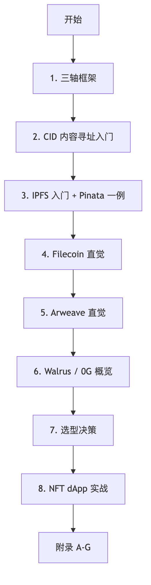
TL;DR — ipfs add 只解决命名（内容寻址），不解决"数据还在不在"（持久性）和"读得到不"（可用性）。三轴各自有对应方案，混淆是 NFT 翻车的头号原因。
钩子：你在 OpenSea 上花了 50 ETH 买了一只 Bored Ape。两年后头像空白，404。token ID 还在你钱包，tokenURI 也返回了好好的 URL，但点开是 404——项目方的服务器供应商倒闭了。你的 50 ETH，从此是一行空气。
讨论 NFT 元数据该放哪、协议日志归档何处之前，先把概念分清。市面上"去中心化存储"这个词把三件不相关的事打包在一起卖：
| 维度 | 它解决的问题 | 不依赖谁就能成立 |
|---|---|---|
| 内容寻址 (addressing) | 给定一段字节，给它一个永远不变的名字（CID） | 任何节点 / 网络 / 公司——CID 是纯数学 |
| 持久性 (durability) | 字节在 N 年后是否仍然存在于至少一处 | 必须有人付费 + 节点同意保有 |
| 可用性 (availability) | 字节在 X 毫秒内能交到读者手里 | 必须有节点在线、被读者发现得到 |
把它们混成"去中心化存储"是工程灾难的源头。最典型的失败模式：项目方以为 ipfs add 同时解决三者——实际只解决了第一项。ipfs add 把字节加进你本地节点的 blockstore，给一个 CID。CID 永远不变，但其他节点既无义务持有它、也无义务回答 DHT 查询。本地节点 GC、断电或重启之后，那个 CID 就只活在曾经 fetch 过它的网关缓存里，几小时到几天后蒸发。
打个比方：ipfs add 就像你给一本书办了"国际书号 ISBN"——号码全球唯一、永远不变。但这个号码本身不会让任何图书馆愿意把书上架。如果你只在自己家里留了一本，搬家时丢了，世界上再也没人能凭这个号码找到这本书。CID 是号码，pinning / Filecoin / Arweave 才是图书馆。
正确的心智模型：
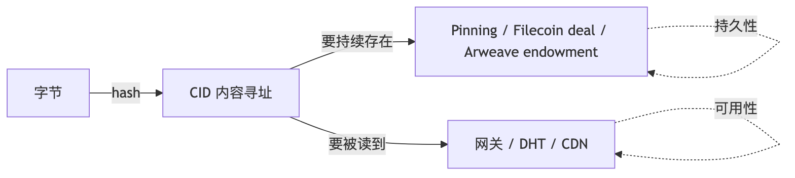
下游的所有方案差异都可以归结为它们如何把这三件事拼在一起。Pinata、Filecoin、Arweave、Walrus 这些名字在第一遍读到时不必紧张——它们都是"持久性 + 可用性"层的不同实现，内容寻址那一层全行业基本统一为 CID（Arweave 的 tx-id 是同等抽象的不同实现）。
NFT 翻车的标准剧本：链上 ERC-721 完好、tokenURI 返回 https://api.coolnfts.xyz/metadata/1234.json、两年后域名被抢注或 AWS 账号欠费、OpenSea 显示空白。问题不在合约，在那条 URL 的所有依赖：
链上数据 immutable，链下数据 mortal。把 NFT 元数据焊在 https 上，相当于把永生账本钉在一具会死的躯壳上。
| 中心化存储的死法 | 真实案例 |
|---|---|
| 硬件故障级联 | AWS us-east-1 2021-12-07 / 2023-06-13 / 2025-10-20 多次 region 级故障，Coinbase / OpenSea 数小时不可用 |
| 商业关停 | Google Cloud IoT Core / Stadia；Heroku 砍免费 dyno；NFT.Storage Classic 2024-06-30 |
| 法律 / 监管 | 2022 OFAC 制裁地址后多家 RPC / 前端封禁；区域性 IP 屏蔽 |
| 账号丢失 / 黑客入侵 | 单点 SSO / API key 泄漏，整个 bucket 被删 |
去中心化存储用三件事对冲：内容寻址做完整性证明、经济激励做持久性、多节点做可用性。注意它不自动等于永久存储——IPFS 默认 best-effort 缓存，Filecoin 是定期合约（默认 180 天起），只有 Arweave 显式宣称"永久"。
章末：本章把三轴分清楚，后面每一章都可以用"这个方案在哪个轴上做了什么"来定位。持久性证明细节见附录 B（Filecoin PoRep/PoSt）和附录 C（Arweave SPoRA）；行业时间线见附录 E 导言。
TL;DR — CID = 内容指纹（hash）+ 元信息前缀。链上只需 32 字节就能永久锁定任意大小的内容。
2014 年，IPFS 创始人 Juan Benet 在斯坦福讲了一句被反复引用的话： "HTTP 是用来取一个文件的协议，但它建立在'你信任 example.com 这台服务器'的前提上。如果我们换一种方式——不靠服务器名字，而靠文件本身的指纹来寻址——就能造出一个永远不会 404 的网络。" 这就是 IPFS 的起点。
位置寻址（HTTP URL）的语义是"先信任路径，再获取内容"——服务器交给你什么字节你都得收，没法验证 5 年后是不是还是同一份。内容寻址反过来：先指定内容指纹，再去任意位置取，拿到字节必须 hash 一遍校验。
一句话懂内容寻址：给文件按指纹归档，不用记仓库号——指纹相同就是同一份文件，不管它躺在哪台服务器上。
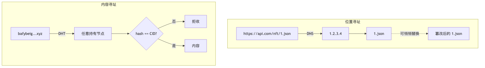
类比：位置寻址是"朝阳区 xx 路 5 号"（搬家就找不到），内容寻址是"身份证号 110101199001011234"（人在哪里都能验明正身）。这是 IPFS / Filecoin / Arweave 的共同前提；它们的差异从下一章持久性开始。
一个典型的 CIDv1：bafybeibwzifw52ttrkqlikfzext5akxu7w4aa3pyr7xkx4r4w6z6t4ehuy
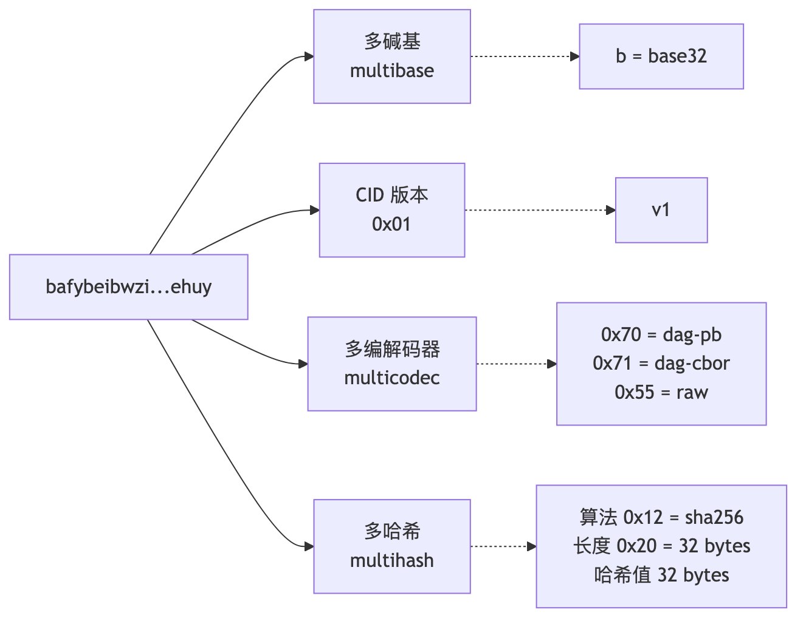
CIDv0 vs CIDv1：
| 属性 | CIDv0 | CIDv1 |
|---|---|---|
| 前缀 | Qm...（46 字符） |
bafy...（59 字符 base32） |
| 编码 | 仅 base58btc | multibase（任意） |
| codec | 仅 dag-pb | 任意（raw / dag-cbor / dag-json...） |
| 哈希 | 仅 sha256 | 任意（blake2b / blake3 / ...） |
| 用例 | 旧 IPFS 兼容 | 现代 IPFS / Filecoin / IPLD |
来源：https://docs.ipfs.tech/concepts/content-addressing/
// 计算 "Hello, decentralized world" 的 CIDv1（dag-pb + sha256 + base32）
import { sha256 } from 'multiformats/hashes/sha2';
import * as raw from 'multiformats/codecs/raw';
import { CID } from 'multiformats/cid';
const bytes = new TextEncoder().encode('Hello, decentralized world');
const hash = await sha256.digest(bytes);
// raw codec = 0x55，原始字节流
const cid = CID.create(1, raw.code, hash);
console.log(cid.toString());
// 输出形如：bafkreih7w...（每次内容相同 → CID 相同）
相同内容 → 相同 CID（confluence），不同内容 → 几乎肯定不同 CID（哈希碰撞概率 ≈ 0）。这就是去重的物理基础——全球只需要存一份。
章末：Multihash / Multicodec / Multibase 的完整规范见附录 A（IPFS 协议栈详）。CIDv0/v1 兼容表格见附录 A §A.1。
TL;DR — IPFS = 寻址 + P2P 分发，不自带持久性。Pinata 是"IPFS 时代的 AWS S3"。不要单一依赖任何一家 Pinning SaaS（NFT.Storage 关停是前车之鉴，完整复盘见附录 F）。
| 轴 | IPFS 默认行为 | 需要叠加什么 |
|---|---|---|
| 内容寻址 | 全部解决——CID 是全行业通用命名 | 无需额外 |
| 持久性 | best-effort GC，不 pin 就丢 | Pinata / Lighthouse / Filecoin |
| 可用性 | DHT 查询，冷门 CID 5-30 秒 | HTTP 网关 + CDN |
IPFS 协议栈细节（DHT / Bitswap / IPLD / CAR 格式 / IPNS / DNSLink）见附录 A。
| 服务 | 免费额度 | 付费起价 | 特点 | 状态 |
|---|---|---|---|---|
| Pinata | 1 GB / 1000 文件 | $20/月起 50 GB | 行业标杆，NFT 主流 | 活跃 |
| Filebase | 5 GB | $0.005/GB/月 | S3 兼容，最低单价 | 活跃 |
| Lighthouse | 5 GB | $2.4/GB 一次付清 | 内置加密 + Filecoin Deal | 活跃 |
| 4everland | 5 GB | $5/月起 100 GB | EVM 友好 | 活跃 |
| NFT.Storage Classic | — | — | 2024-06-30 已关停 | 停服 |
生产规则：同一份 CID 同时 pin 到 ≥ 3 家，关停时反应是"减一家"而非"全栈瘫痪"。成本详细对比见附录 G。
// pinata-upload.mjs — npm i pinata
import { PinataSDK } from 'pinata';
import fs from 'node:fs';
const pinata = new PinataSDK({
pinataJwt: process.env.PINATA_JWT, // https://app.pinata.cloud 获取
pinataGateway: 'gateway.pinata.cloud',
});
async function main() {
const blob = new Blob([fs.readFileSync('./my-nft.png')]);
const file = new File([blob], 'my-nft.png', { type: 'image/png' });
const upload = await pinata.upload.file(file);
console.log('CID:', upload.cid);
// 任意网关访问：https://ipfs.io/ipfs/<CID>
}
main();
章末：ipfs add 只是命名；Pinning SaaS 是持久性；HTTP 网关是可用性——三轴分开理解再叠加。网关选型、IPNS/DNSLink 可变指针见附录 A §A.3-A.4。
TL;DR — Filecoin = 区块链版 S3，但矿工偷工减料会被密码学逮住、抵押被罚没。甜点：长期归档、AI 数据集、DAO 存档。不适合：高频实时读（retrieval 秒到分钟级）。
2017 年 8 月，Filecoin ICO 60 分钟内募资 1.86 亿美金，30 天总募资 2.57 亿——史上最大 ICO 之一。 Juan Benet 的比喻：AWS S3 一个月一 GB 几分钱，但 Amazon 想关你账号就关；Filecoin 同样存数据付钱，区别是任何矿工偷工减料都会被密码学逮住、抵押罚没。主网延后了三年（2020-10）才上线。
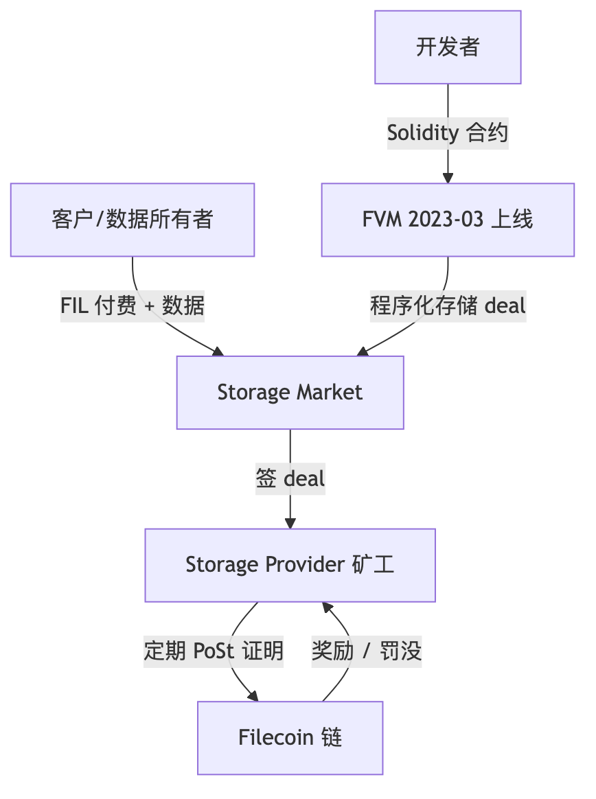
| 维度 | AWS S3 | Filecoin |
|---|---|---|
| 抗删除 | Amazon 可随时关账号 | 矿工删除被密码学发现 + 罚没 |
| 可验证 | 只能信任 Amazon | PoSt 每 24h 全网审计，链上可查 |
| 长期性 | SLA 按需续费 | FIL+ 数据 5 副本起，deal 最长 1278 天（约 3.5 年，官方上限；2026-04 数据） |
| 读延迟 | 毫秒 | 秒~分钟（unseal 开销） |
矿工维度：sealing 是个慢活——一个 64 GiB sector 完整封装约 5-6 小时（CPU + GPU）。这是存储证明严肃性的代价，也是 Filecoin 价格不能无限低的原因。PoRep / PoSt 数学细节见附录 B。
Filecoin Plus：社区 Notary 发放 Datacap，用 Datacap 找矿工存 → 矿工获 10× block reward 倍数，客户可免费存真实数据。Internet Archive、UC Berkeley、多个 NFT 项目都是受益方。
SaaS 层（自己不用跑 Lotus）：
| SaaS | 状态 | 功能 |
|---|---|---|
| Lighthouse | 活跃 | 一次付费永久 + 自动 Filecoin deal + 加密 |
| Web3.Storage (Storacha) | 活跃 | S3 式 SDK，自动 IPFS pin + deal |
| Estuary | 2023-07 关停 | 参考教训 |
| NFT.Storage Classic | 2024-06-30 关停 | 参考附录 F |
// lighthouse-upload.mjs — npm i @lighthouse-web3/sdk
import lighthouse from '@lighthouse-web3/sdk';
const apiKey = process.env.LIGHTHOUSE_API_KEY;
async function main() {
const response = await lighthouse.upload('./my-dao-archive.tar.gz', apiKey);
console.log('CID:', response.data.Hash);
// Filecoin deals 后台异步建立，可查 response.data.Deals
}
main();
章末：Filecoin 矿工生命周期、FVM Solidity 合约调 storage deal、FIL 经济参数详见附录 B。
TL;DR — 一次付费，永久存储，靠 Kryder 定律赌存储成本持续下降。抗审查极致：上传即永恒，无法删除。不适合合规需要"被遗忘权"的数据。
Sam Williams（Arweave 创始人）在肯特大学读博时的核心命题： 硬盘价格 60 年降了一万倍，未来 200 年只会更便宜。如果按今天的成本预付 200 年存储费，靠基金滚利息和成本下降，就能真正扛 200 年。2018 年主网上线，今天存储着 Mirror 上数十万篇文章、SnapShot 投票快照、Internet Archive 部分备份。
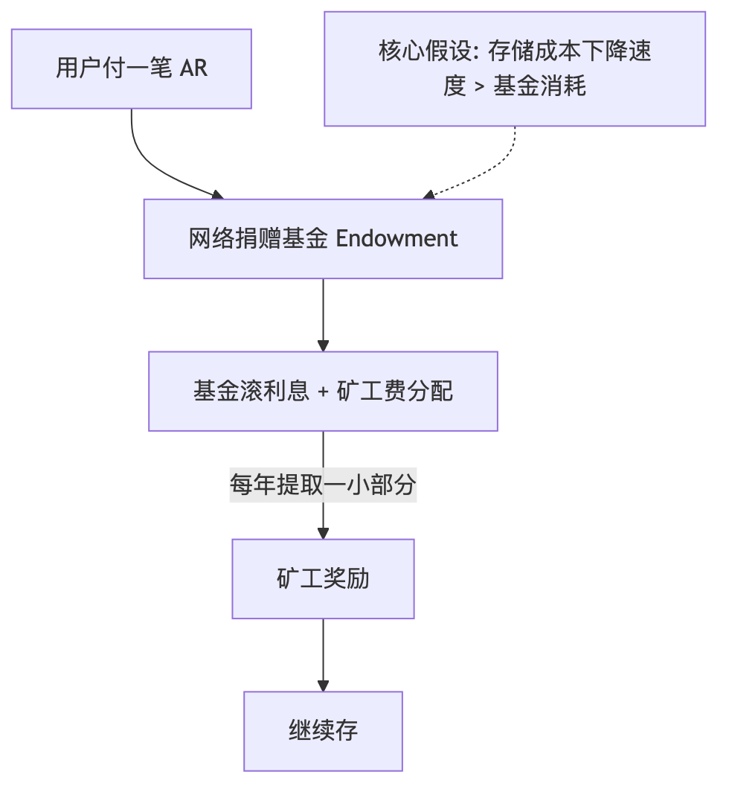
庞氏验证：若存储成本上升且永久反向，模型才会撑不住。历史上从未发生。基金已有保守边界（按 200 年定价），超额收益再投资可对冲波动。blockweave / SPoRA 共识机制详见附录 C。
| 维度 | Filecoin | Arweave |
|---|---|---|
| 付费模式 | 定期合约续费 | 一次付清 |
| 删除 | deal 到期可不续 | 不可删 |
| 读延迟 | 秒~分钟 | 秒级（网关缓存后更快） |
| 可删合规 | 可不续约 | 违反 GDPR 被遗忘权 |
| 甜点 | AI 数据集、大批量长期归档 | NFT 元数据永久存、DAO 决议 |
直接 Arweave 的痛点：每个文件一笔交易、用户必须持有 AR 代币、等区块确认 ~2 分钟。
ANS-104 解决：把 N 个文件打包成一笔 Arweave 交易，单 item 几秒内确认（bundler 即时签收据），用 ETH/SOL/USDC 都能付（bundler 内部换 AR）。这就是为什么几乎所有"声称用 Arweave"的 NFT 项目实际上走的是 Irys（原 Bundlr）或 Turbo。
// irys-upload.mjs — npm i @irys/sdk
import Irys from '@irys/sdk';
async function main() {
const irys = new Irys({
url: 'https://node1.irys.xyz',
token: 'ethereum',
key: process.env.PRIVATE_KEY,
});
const data = JSON.stringify({ name: 'My NFT #1', image: 'ar://...' });
const tags = [{ name: 'Content-Type', value: 'application/json' }];
const receipt = await irys.upload(data, { tags });
console.log('Arweave tx ID:', receipt.id);
console.log('永久 URL:', `https://arweave.net/${receipt.id}`);
}
main();
章末：Arweave blockweave 结构、SPoRA 共识数学、AR.IO 网关代币化、ANS-104 协议细节见附录 C。
TL;DR — Walrus 用二维纠删码把复制因子从 10× 砍到 4-5×（vs. AWS S3 "11 个 9" 是 3× 副本 + 多 AZ；Filecoin 老三家典型 10× 全副本），但紧耦合 Sui；0G 是 AI 专用的 DA + 存储 + 计算三层栈。两者都是 2025 主网，适用场景不重叠老三家。
2025-03-27 Walrus 主网上线，专为大文件（4K 视频、3D 模型、AI 模型权重）。 核心工程要点：RedStuff 二维纠删码让复制因子从 10× 全副本压到 4-5×，100 节点分布 19 国，团队声称比 Filecoin/Arweave 便宜约 100×（取决于市场）。代价：紧耦合 Sui，EVM 项目接入需要维护 Sui 私钥 + 跨链桥——而跨链桥是 Web3 历史上被盗最多的基础设施（Wormhole $325M / Ronin $625M / Multichain $130M）。
甜点：大型 NFT 媒体（4K 视频、3D 模型）、AI 模型权重分发、Sui 生态项目。
EVM 项目忠告：原生 EVM 项目优先 Filecoin（FVM 同 EVM 兼容）/ Arweave / IPFS+Pinata。只在确实需要"极低单价 + 可接受 Sui 依赖"时才选 Walrus。
RedStuff 二维纠删码原理见附录 D。
0G（Zero Gravity）2025-09 Aristotle 主网。 口号是"AI 应用需要的不是通用去中心化存储，而是 DA + 存储 + GPU 计算的一体栈"。
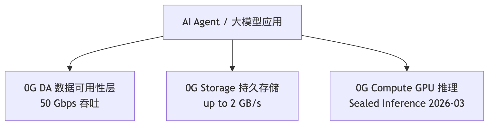
用法口诀：推理日志（高频小写）→ 0G DA；模型权重（大文件持久）→ 0G Storage；训练数据集（低频批量）→ Filecoin FIL+。
0G / EthStorage / Greenfield / Codex / Swarm 详细对比见附录 E。
章末：6 个新一代存储平台的完整选型对比见附录 E §E.3。
TL;DR — 两个问题定方案：(1) 数据要存多久？(2) 读取频率多高？
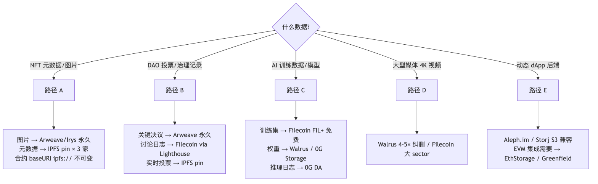
| 维度 | 问题 | 方案梯度 |
|---|---|---|
| 持久性 | 1 年？10 年？永久？ | 月付 pin → Filecoin → Arweave |
| 读取 pattern | 高频 or 归档？ | 高频 → IPFS + CDN；归档 → Filecoin |
| EVM 原生需求 | 合约要直接读写吗？ | 需要 → EthStorage / Greenfield |
❌ NFT 元数据用 https:// URL（服务器倒了就 404）
❌ 单一 Pinning 服务（NFT.Storage 关停教训）
❌ ipfs:// base URI 设为 mutable IPNS（难以验证）
❌ 把高频读小数据放 Filecoin（retrieval 慢）
❌ 用 Arweave 存"明天可能要删"的数据（删不掉）
❌ 没有把 root CID hash 写入链上 registry
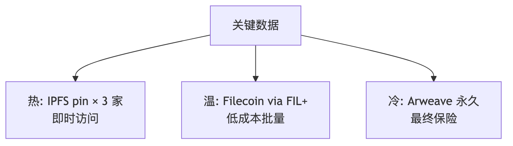
迁移 playbook（平台关停应对）：90 天公告期 → 盘点 CID registry → CAR 导出 → 新平台上传 → hash 校验 → 更新链上 contenthash。
⚠️ 主线读者请注意：下面 §A–§G 是约 1100 行的协议深挖附录，主线 §8 实战在所有附录之后。
小白 / 第一遍读者：先看 §8 实战（Cmd+F 搜
## 8. NFT dApp 实战直接跳转），再回头按需翻附录。选型验证 / 深挖读者：按顺序读附录 A→G，再做实战。
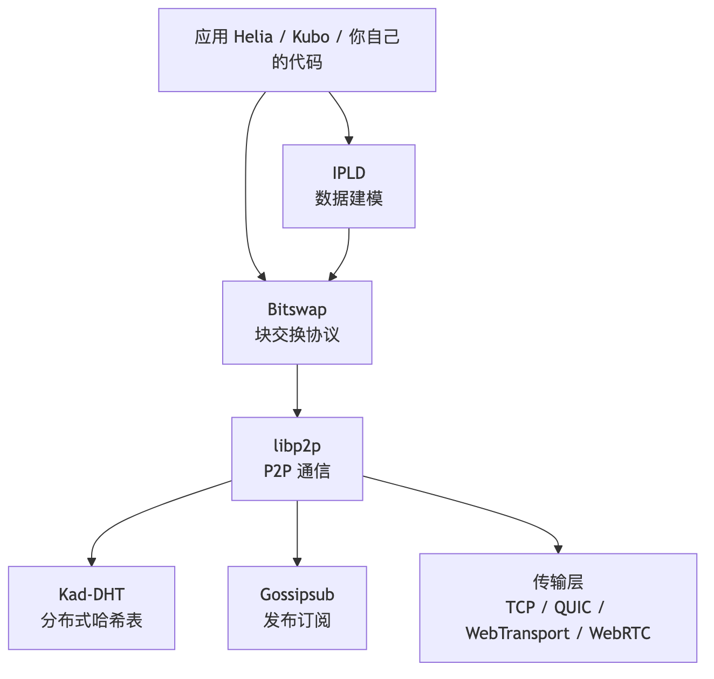
四个核心模块：
DHT 解决一个问题：给定 CID，去哪里找？
XOR 距离：节点 ID 和 CID 都是 256 位，距离 = ID XOR CID。每跳至少把距离减一半（k-bucket 路由），所以 N 个节点中找一个 provider 只需 O(log N) 跳。
DHT 查询慢是 IPFS 体验差的最大单一原因。第一次拉一个冷门 CID 经常 5-30 秒，热门 CID（已被网关缓存）几百毫秒。这就是为什么生产 dApp 几乎都直接用网关 + pin 服务，绕开自己跑 DHT。
来源：https://docs.ipfs.tech/concepts/dht/
js-ipfs 已被官方淘汰，Helia 是 2023 起的现代 TypeScript 实现：
// 最小 Helia 上手
import { createHelia } from 'helia';
import { unixfs } from '@helia/unixfs';
const helia = await createHelia();
const fs = unixfs(helia);
const cid = await fs.addBytes(new TextEncoder().encode('Hello'));
console.log(cid.toString()); // bafkrei...
// 读回来
const decoder = new TextDecoder();
let text = '';
for await (const chunk of fs.cat(cid)) {
text += decoder.decode(chunk, { stream: true });
}
console.log(text); // Hello
来源：https://github.com/ipfs/helia
CID 只指向"一个块"。但实际数据经常是嵌套结构：
IPLD（InterPlanetary Linked Data）是跨 CID 链接的数据模型：节点之间通过 CID 互相指向，形成 Merkle DAG。
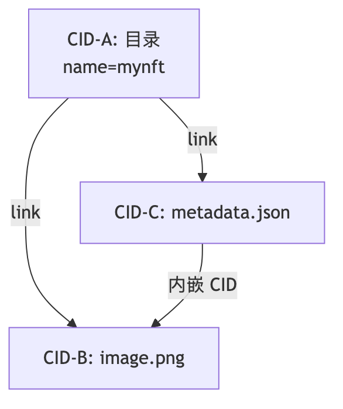
DAG（有向无环图）的关键性质：任何子节点变化 → 父节点 CID 必变。这就是 git 和区块链共用的 Merkle 根性质。
IPLD 数据可以用不同 codec 存：
| codec | 用途 | 例子 |
|---|---|---|
dag-pb |
UnixFS 文件/目录（IPFS 默认） | NFT 图片 |
dag-cbor |
二进制结构化（紧凑、含链接） | Filecoin 区块、CAR 文件元数据 |
dag-json |
JSON + CID 链接（人类可读） | 调试 |
raw |
单纯字节流（无解释） | 大文件 chunk |
CAR = 一组 IPLD 块的串行化打包格式，是 IPFS / Filecoin / Web3.Storage 之间传输的标准格式：
实战要点：超过 100 MB 的内容不要用 addBytes 一次性传，而要先打 CAR 再上传，否则 HTTP 超时 / 内存爆。
场景题：假设你做一个 NFT 项目，10000 张图，每张 200 KB，总计 2 GB。你打算存 IPFS。问题：图存在谁的硬盘上？你跑一个本地 IPFS 节点存？那你的家用路由器 24/7 不能断电，电费一年也不少。让"IPFS 网络"自己存？IPFS 协议本身不存数据，它只是寻址 + 分发协议——没人付钱让节点持久持有。这就是 Pinning 服务的市场：Pinata / Filebase / 4everland 这些公司给你跑专业节点、保证 SLA、24/7 在线，相当于 IPFS 时代的 AWS S3。
现实警告：2024-06-30，Protocol Labs 自家的 NFT.Storage Classic 关停免费上传通道。三年里它免费 pin 了海量 NFT 元数据；那一天起，无数项目方发现自己的 NFT 元数据"还在但再也无法续传"，链上 baseURI 早就 immutable，迁不走。这一节的所有教训都从这次事故来。
Pinning = 把"这块内容不能 GC"显式落到某个节点。自己 pin 自己节点 = 自己当 SP，节点关机数据就消失。第三方 pinning 服务的本质是用 SaaS 信任换 24/7 持久性 + 低延迟可用性——你不再依赖 IPFS 协议本身的 best-effort 假设，而是依赖某家公司的 SLA。这条线注定比 Filecoin / Arweave 脆弱（公司可关停、价格可调），所以是"热数据"层而非"长期保存"层。
| 服务 | 免费额度 | 付费起价 | 特点 | 状态 |
|---|---|---|---|---|
| Pinata | 1 GB / 1000 文件 | $20/月 起 50 GB | 行业标杆，NFT 主流；2026 起免费额度缩水 | 活跃 |
| Web3.Storage (Storacha) | "Starter" 免费层 5 GB / 月，包含上传 + 网关读 + 1 个 Space；超出按 Lite ($10/月 100 GB) / Business ($100/月 2 TB) 阶梯计费，详见 storacha.network/pricing | Lite $10/月、Business $100/月 | Protocol Labs 系，2024 旧 web3.storage API 已迁移到 Storacha 平台；旧 SDK (@web3-storage/w3up-client) 仍兼容但 endpoint 已切换 |
活跃但模式变了：免费层从早期"无限"收紧到 5 GB |
| Filebase | 5 GB | $20/月 起含 1 TB 存储（约 $0.02/GB/月，超量按 $0.005/GB 计） | S3 兼容 API，最低存储单价 | 活跃 |
| Lighthouse | 5 GB | 一次付费永久存（$2.4/GB 估算）或月付 | 内置加密、Filecoin Deal 自动化 | 活跃 |
| NFT.Storage | Classic 已 2024-06-30 关停；Long-Term 仍可用 | 企业付费 | PL Filecoin Impact Fund 接管 | 限制使用 |
| 4everland | 5 GB | $5/月 起 100 GB | 集成多链 / EVM 友好 / IPFS 网关 | 活跃 |
来源： - Pinata 价格 https://pinata.cloud/pricing - Filebase 价格 https://filebase.com/pricing - NFT.Storage 状态 https://nft.storage/blog/nft-storage-operation-transitions-in-2025 - Web3.Storage 转 Storacha https://storacha.network/
这两家是 IPFS pinning 行业的标杆，也是迄今最有教育意义的两次"以为去中心化、实际单点依赖"事故。
NFT.Storage Classic（2024-06-30 关停免费上传）
Pinata 免费层缩水（2024-2026 渐进式）
复盘归纳：免费 pinning 的本质矛盾是 IPFS 不可商业化的部分（DHT 寻址 + P2P 传输）必须由商业实体托起来——这条边界既不可避免、也注定不稳定。把项目命脉绑在任何一家 SaaS 上都是误用 IPFS。生产模板：3 家 pinning 冗余 + Filecoin/Arweave 长期备份 + 链上 hash registry 自证。
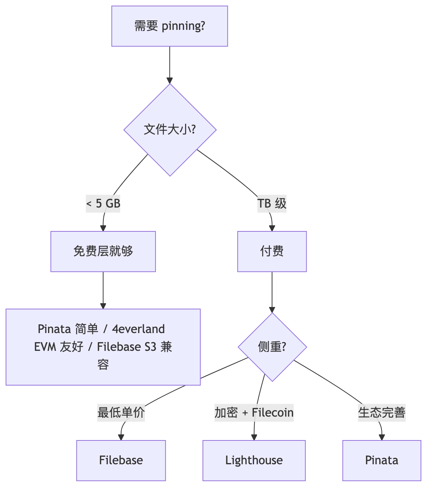
// pinata-upload.mjs
// 依赖：npm i pinata
import { PinataSDK } from 'pinata';
import fs from 'node:fs';
const pinata = new PinataSDK({
pinataJwt: process.env.PINATA_JWT, // 从 https://app.pinata.cloud 获取
pinataGateway: 'gateway.pinata.cloud',
});
async function main() {
// 上传单文件
const blob = new Blob([fs.readFileSync('./my-nft.png')]);
const file = new File([blob], 'my-nft.png', { type: 'image/png' });
const upload = await pinata.upload.file(file);
console.log('CID:', upload.cid);
// CID 形如 bafkreig...，永远定位这张图
// 通过任意 IPFS 网关都能访问：
// https://gateway.pinata.cloud/ipfs/<CID>
// https://ipfs.io/ipfs/<CID>
// https://dweb.link/ipfs/<CID>
}
main();
思考题：Chrome / Safari 不懂 IPFS 协议。如果你给用户一个 ipfs://bafy... 链接，绝大多数浏览器只会一脸懵。那 NFT 市场上千万张图怎么显示出来的？答案是 HTTP 网关——一台跑 IPFS 节点 + 翻译 HTTP 请求的服务器，把 ipfs://CID 翻译成 https://ipfs.io/ipfs/CID，浏览器就懂了。
普通浏览器不会说 IPFS 协议，所以需要 HTTP → IPFS 桥梁，叫 gateway：
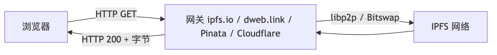
| 网关 | 维护方 | 特性 | 限速 |
|---|---|---|---|
https://ipfs.io/ipfs/<CID> |
IPFS Foundation | 官方、最知名、容易被 rate-limit | 严格 |
https://dweb.link/ipfs/<CID> |
IPFS Foundation | 子域名隔离（防 same-origin 攻击） | 中等 |
https://cloudflare-ipfs.com/ipfs/<CID> |
全球 CDN、最快；2024-08 正式关停，不再可用 | — | |
https://gateway.pinata.cloud/ipfs/<CID> |
Pinata | 仅供自己用户；私网快 | 客户专属 |
https://<CID>.ipfs.4everland.io |
4everland | 子域名风格 | 中等 |
永远不要前端硬编码单一网关。任何一家挂了你的 NFT 图片就显示不出来。生产实践：客户端列表轮询（race the gateways），第一个 200 的就用。
路径风格（旧）: https://dweb.link/ipfs/bafy.../image.png
子域名风格（新）: https://bafy....ipfs.dweb.link/image.png
为什么后者好： - Same-origin policy 把不同 CID 的内容隔离到不同 origin（防 XSS） - Service Worker 可挂在 CID 子域上，做客户端验证
来源：https://docs.ipfs.tech/concepts/public-utilities/
两难场景：你做了一个 dApp 前端，每周发新版本，每次部署 CID 都变。但用户不可能记一长串 bafybei... 字符——他们想输入 myapp.eth 就到。CID 是不可变的（这是 IPFS 的优点），可你的网站要可变（产品要迭代）。怎么用一个稳定名字指向"最新 CID"？
CID 内容变就变 CID，但你的网站需要一个稳定的入口，比如 mydao.eth。
三种方案：
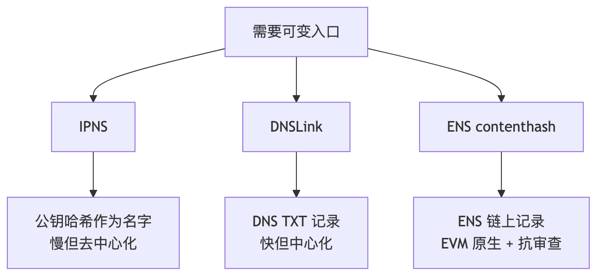
/ipns/<公钥哈希> 或 /ipns/k51qzi5...（base36 编码的 ed25519 公钥）DNS TXT 记录指向 IPFS：
$ dig +short TXT _dnslink.docs.ipfs.tech
"dnslink=/ipfs/bafybei..."
最适合 EVM 项目：
// 通过 ENS PublicResolver 设置
resolver.setContenthash(node, hex"e30101701220...");
// 浏览器（如 Brave / MetaMask）解析 mydao.eth → 直接走 IPFS
生产推荐：DAO / dApp 前端 → ENS contenthash + IPFS pinning，用户输入 mydao.eth 即可访问；CI/CD 每次部署更新 contenthash。Uniswap、ENS 自身、Aave 都是这套。
Q1：为什么生产环境不应该硬编码 https://ipfs.io/ipfs/<CID> 作为 NFT 图片地址？给出 3 个理由。
Q2：用一句话区分 IPNS 和 DNSLink 的信任模型。
Q3：你做了一个 dApp 前端，每次部署都生成新 CID。怎么保证用户输入 mydao.eth 总是访问最新版？
Q4：解释为什么 IPFS 中"删除"非常困难。
Filecoin 持久性的严肃性来自密码学证明 + 经济惩罚两层。本附录深挖 PoRep / PoSt 证明机制、矿工生命周期和 FVM 合约接口。
想象：你付钱给某个矿工"帮我存这份 1 TB 数据集 1 年"。怎么知道他没把数据删掉？或者更阴险——10 个矿工偷偷共享同一份硬盘？ Filecoin 的 PoRep + PoSt 把这件事做得严肃。
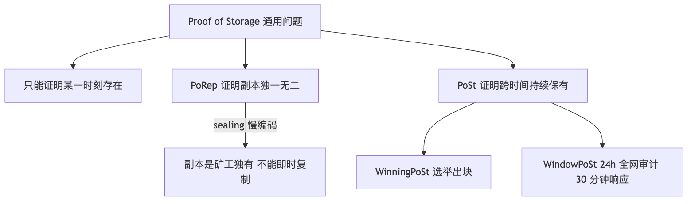
矿工拿到数据后经历 sealing——慢加密过程把数据变成"独一无二的副本"，提交 zk-SNARK 证明。
为什么必须慢：若 sealing 可以即时复制，攻击者可临时向他人借数据骗证明，10 个矿工共享一份硬盘却声称独立 10 副本。sealing 绑定矿工身份 + 时间，使副本即时复用不可行。
来源：https://docs.filecoin.io/basics/the-blockchain/proofs
WinningPoSt：每个 epoch（30 秒）随机选矿工，立刻为某 sector 出证明 + 打包新区块。
WindowPoSt：24 小时切成多个窗口，30 分钟内提交 zk-SNARK 证明，否则被 slash（罚没抵押）。
Filecoin 矿工每天做密码学证明。一台 64 TiB 矿机一年仅证明计算电费就是个数字——这就是 Filecoin 价格不能太低的硬约束。
一个 64 GiB sector 完整 sealing： - PC1（CPU 密集）≈ 3.5 小时 - PC2（GPU zk-SNARK）≈ 30 分钟 - WaitSeed（等链上随机数）≈ 75 分钟 - C1 + C2（最终证明）≈ 30 分钟 - 总计 ≈ 5-6 小时 / sector
| 参数 | 当前值 |
|---|---|
| 区块时间 | 30 秒 |
| 网络存力 | ≈ 25 EiB |
| 实际利用率 | ≈ 30%-40% |
| deal 默认期限 | ≥ 180 天，最长 1278 天（约 3.5 年，官方上限；2026-04 数据） |
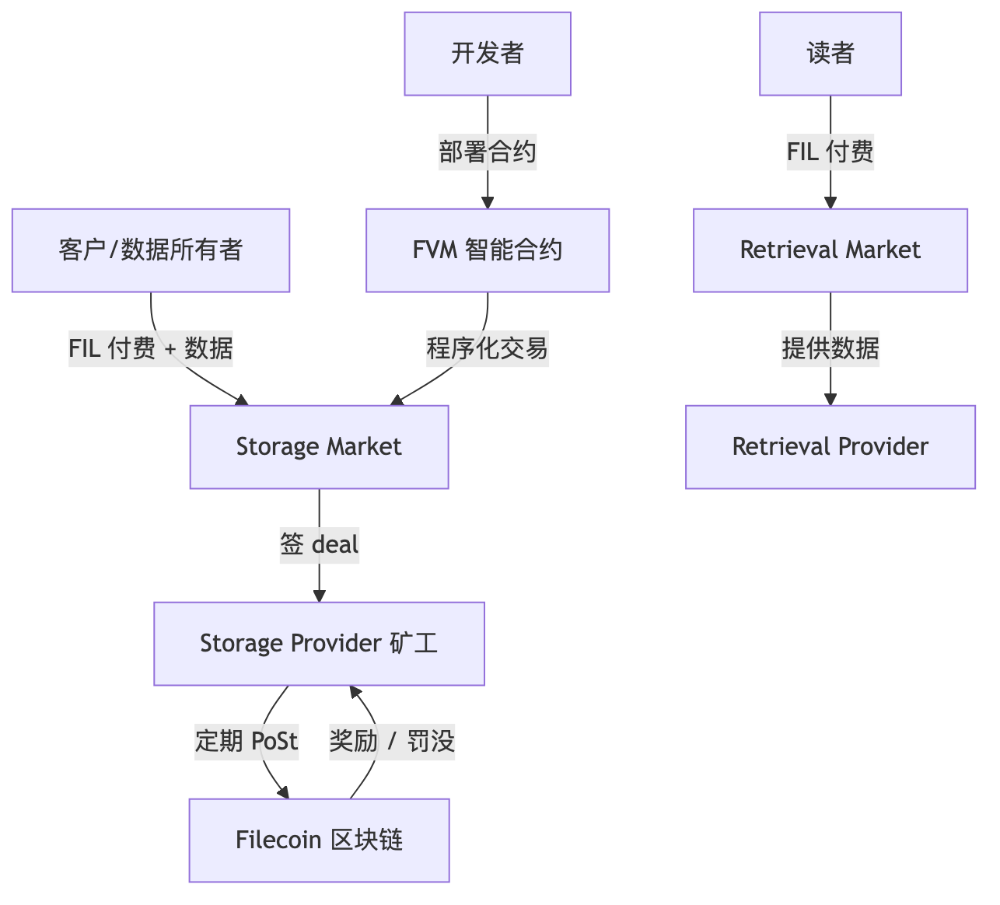
矿工进入网络要锁定 FIL 抵押（initial pledge），并按 sector 数量持续锁定 storage pledge。如果：
这就是为什么 Filecoin 矿工不敢"假装存"。一台矿机抵押动辄百万 FIL，丢一个 sector 罚到肉痛。
| 参数 | 当前值 | 说明 |
|---|---|---|
| 区块时间 | 30 秒 | 一个 epoch |
| 每 epoch 出块 | 平均 5-7 个区块（tipset） | 随机选举 |
| 总供应量 | 20 亿 FIL（hard cap） | |
| 网络存力 | ≈ 25 EiB（2026-04） | 历史峰值 30+ EiB |
| 实际利用率 | ≈ 30%-40% | 大部分仍是 CC（Committed Capacity）空 sector |
| Onchain Cloud 主网 | 2026-01 上线 | 验证存储 + 链上付费 |
来源： - Filecoin docs https://docs.filecoin.io/basics/what-is-filecoin/blockchain - 网络数据 https://filfox.info/ - v26 Gas 优化 https://coinmarketcap.com/cmc-ai/filecoin/latest-updates/
现实数字：2026-04 一个全功能 Filecoin 矿工的硬件起步：32 核 CPU、256 GB RAM、几张 NVIDIA GPU、几百 TB 高密度 HDD + NVMe 缓存盘。一台单机投入 5-10 万美金。开机第一件事不是赚钱，是 sealing——把空硬盘加密成"可证明持有"的 sector，单个 64 GiB sector 要烧 5-6 小时 CPU + GPU。读完这一节你会明白：为什么 Filecoin 价格不能太低（矿工电费撑不住）、为什么 Bitfarms 这种 PoW 矿工很难直接转型 Filecoin（硬件需求完全不同）。
| 类型 | 工作 | 收入来源 |
|---|---|---|
| Storage Provider (SP) | 存数据 + 出 PoSt 证明 | block reward + storage fee + FIL+ datacap multiplier |
| Retrieval Provider | 提供快速读取 | retrieval fee（按字节） |
| Repair Provider | 数据丢失时从冗余恢复 | 修复奖励（实验中） |
很多 SP 同时是 Retrieval Provider；但纯检索矿工目前不多——经济不划算。所以 Filecoin 的"读"实际上经常通过 IPFS 网关或专门的 SaaS（Web3.Storage / Lighthouse）解决。
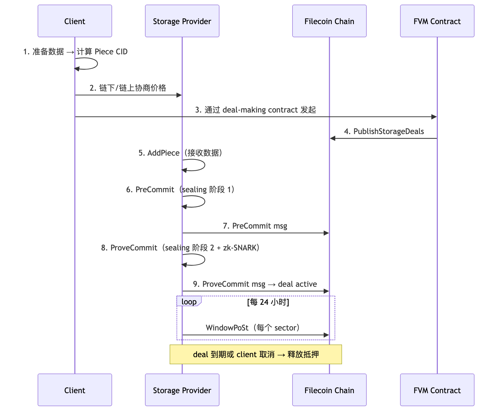
一台 64 GiB sector 完整 sealing 需要：
总耗时 ≈ 5-6 小时 / sector，硬件门槛 = 高端 CPU（多核多 RAM）+ NVIDIA GPU。
来源：https://lotus.filecoin.io/storage-providers/operate/sector-sealing/
2023-03，Filecoin 主网上线两年半之后，团队终于推出了 FVM。这件事的意义可以这样理解：在此之前，"让矿工存我的数据"是一个 Web2 SaaS 流程——用 Lotus CLI 或 Web3.Storage 的 API 让某个矿工接单。FVM 上线那天起，DAO 可以投票"我们存这个数据集"，合约自动选矿工 + 续约 + 替换 + 罚没——存储第一次成了链上原生原语。Vitalik 在那段时间的演讲里说过："Filecoin 终于变成了一条真正的智能合约链。"今天的 Lighthouse 永久存储、Spheron 协议层、Glitter Finance 的链下数据 oracle，都建立在 FVM 之上。
FVM = Filecoin Virtual Machine，2023-03 上线，让 Solidity 合约能跑在 Filecoin 链上，并能直接和存储系统交互。
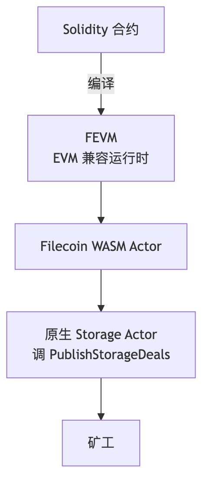
关键点： - Solidity / Hardhat / Foundry / MetaMask 都能用 - 合约可以直接发起 storage deal（前所未有） - 跨链桥到 Ethereum / Polygon
// SPDX-License-Identifier: MIT
pragma solidity 0.8.28;
// 引用 Filecoin 官方 actor 接口
// import "@zondax/filecoin-solidity/contracts/v0.8/MarketAPI.sol";
contract DealMaker {
event DealProposed(uint64 dealId, bytes pieceCid);
/// 发起一笔 storage deal
/// @param pieceCid 数据的 Piece CID（IPFS CID 经过 padding 后的形式）
/// @param pieceSize 数据大小（字节，必须是 2 的幂）
/// @param startEpoch deal 开始时间
/// @param endEpoch deal 结束时间
function proposeDeal(
bytes calldata pieceCid,
uint64 pieceSize,
int64 startEpoch,
int64 endEpoch
) external payable {
// 实际实现需调用 MarketAPI.publishStorageDeals
// 此处展示概念
emit DealProposed(0, pieceCid);
}
}
链上发起 deal 的意义在于：以前必须用 Lotus CLI / SaaS API 让某个矿工接单，整个流程脱离链上规则。现在 DAO 可以投票决定"我们要存这个数据集"，合约自动选矿工 + 续约 + 替换。
来源：https://docs.filecoin.io/smart-contracts/fundamentals/the-fvm
| 维度 | EVM | FVM (FEVM) |
|---|---|---|
| Gas 模型 | gas units × gasPrice | gas + 存储费 |
| 区块时间 | 12 秒 (Eth) | 30 秒 |
| 状态最终性 | 12-15 区块（Eth post-Merge） | 900 epochs ≈ 7.5 小时 |
| 原生能力 | 仅计算 | 计算 + 存储 + 检索 |
| 工具兼容 | 100% Hardhat / Foundry | 99%（个别 precompile 不同） |
Filecoin 最终性极慢（数小时），不适合需要秒级 finality 的 DeFi。它的甜点是：DAO 数据存档、AI 训练集、长尾媒体内容。
2021 年问题：Filecoin 主网上线一年，全网存力 10 EiB，但实际真实数据占比可能不到 5%——绝大多数矿工封装的都是 CC（Committed Capacity）"空 sector"，本质是占地圈块奖励。这事一度让社区炸锅："号称去中心化存储，结果全是空硬盘？" Protocol Labs 推 FIL+ 解决这个问题——10× block reward 倍数让矿工愿意打折甚至免费接真实数据。今天 Filecoin Plus datacap 的接受方包括 Internet Archive、UC Berkeley、各大 NFT 项目。这一节讲清楚：为什么"免费存"在 Filecoin 经济上是合理的，以及背后那条"真实数据 vs 空 sector"的博弈线。
为了激励矿工存"真实有用的数据"，Filecoin 引入了 Datacap 机制：
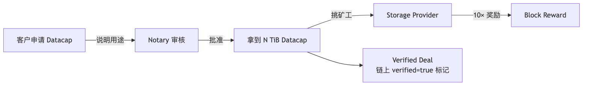
直接和矿工对接太复杂（要懂 Lotus、要管 deal 续期、要监控 fault）。所以出现了 SaaS 抽象层：
| SaaS | 功能 | 状态 |
|---|---|---|
| Web3.Storage（Storacha） | 类似 S3 SDK，自动 IPFS pinning + Filecoin deal | 活跃，已转 Storacha 品牌 |
| Lighthouse | 一次付费永久存（自动跨多 SP + 续 deal）+ 加密 | 活跃 |
| Estuary | 类似 Web3.Storage 的开源替代 | 已关停（2023-07 停服，2024-04 网站下线） |
| NFT.Storage Classic | NFT 元数据免费 pinning | 已关停（2024-06-30） |
| NFT.Storage Long-Term | 付费长期存储，PL Filecoin Impact Fund 接管 | 限制使用 |
来源： - Estuary 关停 https://docs.estuary.tech/（已重定向） - NFT.Storage 转换 https://nft.storage/blog/nft-storage-operation-transitions-in-2025
// lighthouse-upload.mjs
// 依赖：npm i @lighthouse-web3/sdk
import lighthouse from '@lighthouse-web3/sdk';
const apiKey = process.env.LIGHTHOUSE_API_KEY; // 在 https://files.lighthouse.storage 申请
async function main() {
// 上传文件，自动 IPFS + Filecoin 双备份
const response = await lighthouse.upload(
'./my-dao-archive.tar.gz',
apiKey,
);
console.log('CID:', response.data.Hash);
console.log('Filecoin Deals:', response.data.Deals);
// Deals 是后台异步建立的，不等待
}
main();
Q1：为什么 Filecoin 主网刚上线时存力很大但实际利用率只有 5-10%？
Q2：你的 DAO 想存 1 TB 投票档案，预计长期保留 5 年，要写在合约里"自动续期"。请描述技术栈。
Q3：FVM 和 EVM 在最终性上差几个数量级，这意味着什么样的应用不该选 FVM？
Q4：解释为什么很多 NFT 项目即使用 Filecoin 也要先 IPFS pin，再异步 Filecoin deal？
2017 年，Sam Williams（Arweave 创始人，英国人）在肯特大学计算机系读博。他的博士论文研究"分布式持久存储经济模型"。导师对他说："你这玩意理论上可行，但商业化怕是不行——谁会一次付费让你存几百年？" Sam 答："硬盘价格 60 年降了一万倍，未来 200 年只会更便宜。如果我现在收你 100 年的钱，按今天的存储成本预付，靠基金滚利息和成本下降，我就能扛 200 年。" 听起来像庞氏？2018 年主网上线，今天 Arweave 网络存储着 230+ TB 永久数据，包括 Mirror 上几十万篇文章、整个 SnapShot 投票快照、Internet Archive 的部分备份、Edward Snowden 泄露文件的镜像。庞氏不会扛过 8 年；这个赌注还在赢。本章拆解：基金模型怎么算、blockweave 怎么逼矿工存历史、SPoRA 怎么让"硬盘越多出块越多"。**
Filecoin deal-based、按时间续约；Arweave 反过来：一次付费，承诺永久。听起来像庞氏，但模型基于一个简单观察——存储成本指数级下降（Kryder's law），单位存储价格每 18 个月腰斩。
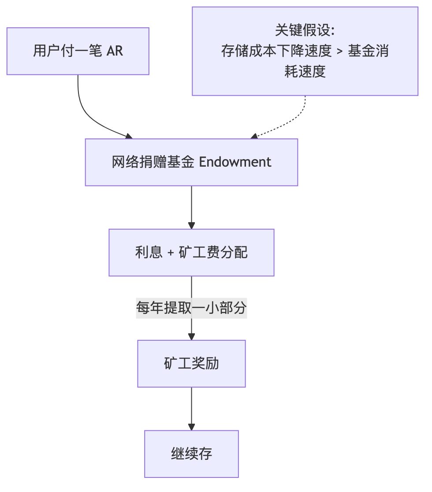
模型核心：基金按当前存储 200 年的成本预收，假设每 18 个月成本腰斩，这笔钱够用很久很久。
如果存储成本反而上升（量子加密等因素）？模型有保守边界（按 200 年定价），且基金多余收益再投资，能扛一定波动。但理论上不能扛"成本永久反向"。
Arweave 不是普通区块链，是 blockweave——每个新区块同时引用前一块和随机一个历史块：
flowchart RL
B1[Block 1] <--prev-- B2[Block 2]
B2 <--prev-- B3[Block 3]
B3 <--prev-- B4[Block 4]
B4 -.recall.-> B1
B3 -.recall.-> B1
B2 -.recall.-> B1矿工要出块必须有那个 recall 块的数据 → 激励全网保留完整历史而非只存最新。
矿工用 SPoRA 共识：
这把"持有数据"和"出块概率"绑在一起，硬盘越多块越多→ 自然激励矿工存历史。
来源：https://www.arweave.org/files/arweave-yellow-paper.pdf
2021 年的痛点：你想给 1 万张 NFT 元数据上 Arweave。直接走？得让 1 万个用户每人买一点 AR 代币、每人发一笔交易、每人等 30 秒确认——mint UX 直接报废。Josh Benaron（Bundlr 创始人）解决了这个问题：搞一个"批量打包者"层，让 1 万个文件用一笔交易上链，用户用 ETH/SOL/USDC 都能付，bundler 自己内部换 AR。2021 年 Bundlr 上线，瞬间被 NFT 圈采纳——MetaMask 不用切 Arweave 网络、用户不用知道 AR 是什么。2024 年 Bundlr 改名 Irys，2025 年继续扩展为"可编程 datachain"。今天你看到的几乎所有"声称用 Arweave"的 NFT 项目，背后跑的都是 Irys 或 Turbo。
直接上链要：
社区提出 ANS-104 标准：把 N 个 data item 打包成一笔 Arweave 交易，外面套一层 bundler 服务。
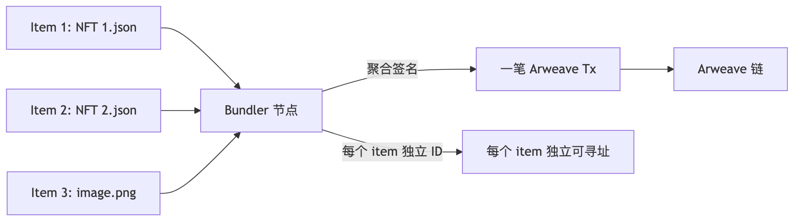
好处： - 单 item 几秒内确认（bundler 即时签收据，链上随后批量上） - 用户可以用 ETH / SOL / MATIC / USDC 等支付（bundler 内部换 AR） - 适合海量小文件（NFT mint）
历史演变： - Bundlr Network（2021 起）：第一个生产级 bundler - Irys（2024 改名）：原 Bundlr，扩展为"可编程 datachain"概念 - Turbo（ArDrive 出品）：替代 bundler，整合到 ArDrive / AR.IO 生态
2026-04 状态：Irys 推出 IrysVM（EVM 兼容 datachain）；Turbo 提供 Turbo Credits（用各种代币购买上传额度）。
来源： - Irys https://irys.xyz/ - Turbo https://docs.ardrive.io/docs/turbo/turbo.html
// irys-upload.mjs
// 依赖：npm i @irys/sdk
import Irys from '@irys/sdk';
async function main() {
// 用 Ethereum 私钥支付（自动换 AR）
const irys = new Irys({
url: 'https://node1.irys.xyz',
token: 'ethereum',
key: process.env.PRIVATE_KEY,
});
// 充值（仅首次/余额不足时）
// await irys.fund(irys.utils.toAtomic(0.05));
// 上传
const data = JSON.stringify({
name: 'My NFT #1',
description: 'A permanent NFT metadata',
image: 'ar://QHnHs8BHQ.../image.png',
});
const tags = [
{ name: 'Content-Type', value: 'application/json' },
{ name: 'App-Name', value: 'MyNFT-Project' },
];
const receipt = await irys.upload(data, { tags });
console.log('Arweave tx ID:', receipt.id);
console.log('Permaweb URL:', `https://gateway.irys.xyz/${receipt.id}`);
// 永久 URL：https://arweave.net/<tx-id>
}
main();
老问题：Arweave 数据本身永久存活，但用户怎么读到？历史上靠 arweave.net 这一个公益网关——一旦它扛不住流量或被监管屏蔽，几十万 Mirror 文章瞬间打不开。这件事发生过好几次。AR.IO 的解决方案：把"网关运营"代币化，谁愿意跑节点就质押 ARIO 拿奖励，多家网关 + ArNS 域名 + GraphQL 索引服务全部协议化。
Arweave 的网关一直是"谁愿意跑就跑"，但需要资金 + 高可用。AR.IO（2025-02 主网）是网关代币化的协议层：
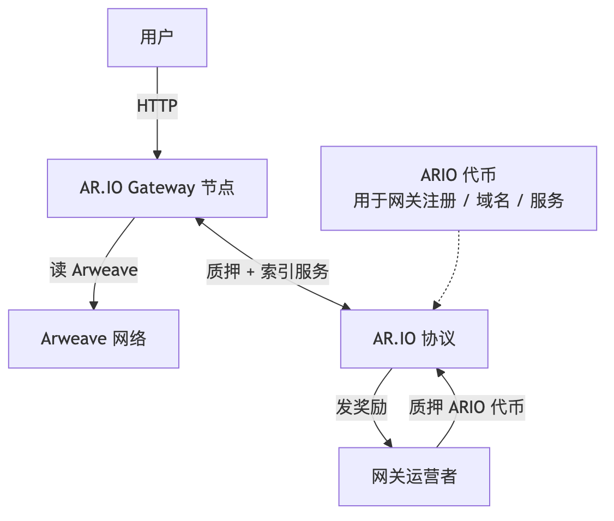
核心服务： - 数据上传 / 下载 - ArNS（Arweave 域名系统，类似 ENS） - GraphQL 索引
来源：https://ar.io/
| 应用 | 用途 | 备注 |
|---|---|---|
| Mirror | 去中心化博客 / Newsletter | 文章上 Arweave，permaweb URL |
| Paragraph | 类似 Mirror，订阅 + NFT | 2024 收购 Mirror |
| Lens Protocol | 社交图谱（部分数据） | 长内容 / 历史归档 |
| Glacier / SnapShot | 区块链历史快照 | 链下 archive |
| ArDrive | 文件管理类似 Dropbox | 终端用户 GUI |
新版浏览器（Brave）和 ar.io 网关支持 ar:// 协议：
ar://abcdefg-tx-id → 直接定位某条 Arweave 交易
ar://my-blog → 通过 ArNS 解析到目标 tx
Q1：为什么 Arweave 的"永久"不是骗局？给出经济模型的两个核心假设。
Q2：直接 Arweave 上传一个 1 KB 文件 vs 通过 Irys bundle 上传，分别要多久确认？
Q3：NFT 项目 mint 时为什么几乎都用 Irys/Bundlr 而不是直接 Arweave？
Q4：AR.IO 引入网关代币的根本原因是什么？
2025-03-27，Walrus 主网上线那天，Sui 创始人 Evan Cheng 在 Twitter 上说："我们花了两年时间想这个问题——区块链不擅长存大文件（几十 MB 已经是极限），但 Web3 应用越来越需要存大文件（4K 视频、3D 模型、AI 模型权重）。我们的答案是：把数据切成二维网格、用纠删码砍掉 50% 冗余、再用密码学抽样挑战代替 PoSt 全量证明。" Walrus 这个名字（海象）来自团队对"水生哺乳动物"的偏爱——Sui 是日语"水"。论文 Walrus: An Efficient Decentralized Storage Network 发在 arXiv 2505.05370，阅读门槛比 Filecoin 论文低不少。真实测试：存一份 1 GB 视频 10 个 epoch（约一年），定价大约 0.05 WAL（远低于 Filecoin 同等持久性）。代价是 Walrus 紧耦合 Sui，EVM 项目接入要么跨链桥要么走中心化 SaaS。
Sui 团队 2025-03 主网，代币 $WAL，100 节点分布 19 国，专为大文件 / 二进制 blob。它的工程要点只有一个：用 RedStuff 二维纠删码把单文件复制因子从老三家的 10×+/全副本压到 4-5×，存同样数据少花一半空间。代价是数据可用性证明从"PoSt 全量"换成了"sampling 挑战"，在 BFT 假设下成立。
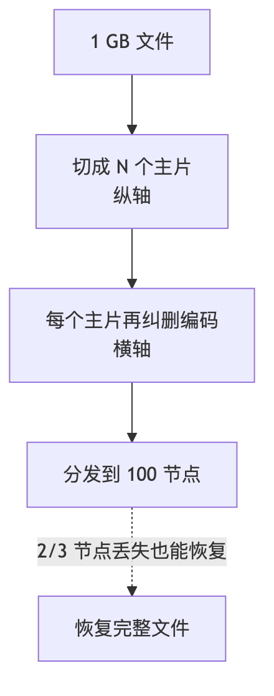
经典 Reed-Solomon 纠删码：n 个数据块 + k 个校验块，丢任意 k 个还能恢复。Walrus 在二维上做：
来源： - Walrus 论文 https://arxiv.org/abs/2505.05370 - Walrus 主网 https://www.walrus.xyz/
// walrus-upload.mjs
// 当前需要 Sui CLI + walrus 客户端；后续 SDK 完善后可直接用 TS
import { execSync } from 'node:child_process';
const file = './my-large-video.mp4';
// 通过 walrus CLI 上传，需要先：
// 1. 安装 sui CLI 和 walrus client
// 2. 配置 sui keystore（存有 SUI 和 WAL 余额）
const result = execSync(
`walrus store ${file} --epochs 10`,
{ encoding: 'utf-8' },
);
// 输出形如：
// Blob ID: 0xabc123...
// Stored until epoch: <N>
// Cost: 0.05 WAL
console.log(result);
// 读取：
// walrus read <blob-id> --out ./output.mp4
// 或 HTTP 网关：https://aggregator.walrus-testnet.walrus.space/v1/<blob-id>
EVM 项目接入注意事项
Walrus 与 Sui 紧耦合：blob registration、epoch 续费、metadata、支付（$WAL）全部走 Sui 链。EVM 项目要用 Walrus，只有两条路：
跨链桥本身风险极大：Wormhole（2022-02 被盗 $325M）、Ronin（2022-03 $625M）、Nomad（2022-08 $190M）、Multichain（2023-07 $130M 团队跑路且至今未恢复）——桥是 Web3 历史上被盗最多的基础设施类别。把"长期存储 + 经常续费"的工作流挂在跨链桥上，相当于给资产持续暴露在桥的攻击面下。
务实建议：EVM 原生项目存大文件，优先 Filecoin（FVM 同 EVM 兼容）/ Arweave / IPFS+Pinata；只在确实需要"4K 视频 + 极低单价 + 可接受 Sui 依赖"且团队有 Sui 工程能力时才选 Walrus。
类比：如果 IPFS / Filecoin / Arweave 是"AWS S3 + Glacier"，那 0G 就是"AWS S3 + EBS + Lambda + GPU"全家桶——但只针对 AI 应用。它不和老三家抢"通用长期存储"市场，而是赌 AI workload 的 IO 模式（小块随机读、模型权重大文件分发、推理日志高频小写）和现有去中心化存储不匹配——用 DA + 存储 + 计算三层捆绑提供 AI 专用栈：
0G（Zero Gravity）2025-09 Aristotle 主网。
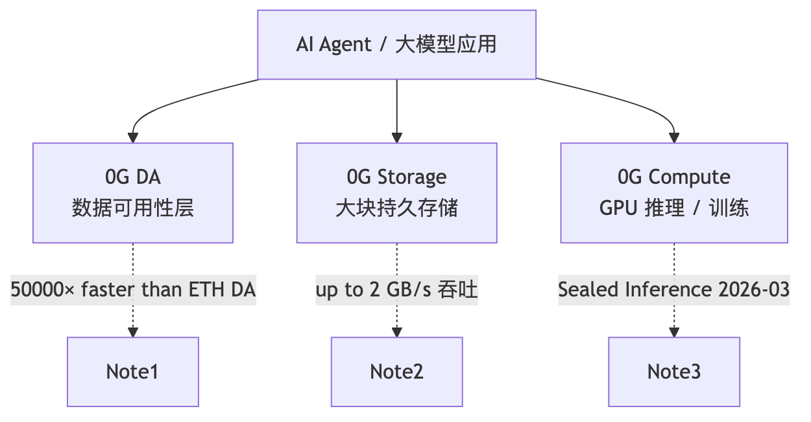
关键数据（来源 0G 官方）： - DA 层吞吐：50 Gbps - 存储层吞吐：每节点最高 2 GB/s - DA 成本：以太坊 DA 的 1/100 - Sealed Inference：2026-03 上线，加密推理
来源：https://www.0gfoundation.ai/
| 维度 | Ethereum DA (Blob) | Celestia | 0G DA |
|---|---|---|---|
| 吞吐 | ≈ 1 MB/s | ≈ 2-8 MB/s | 50 Gbps |
| 单 GB 成本 | $$$$ | $$ | $ |
| Finality | 12 分钟 | 15 秒 | < 1 秒 |
| 用例 | rollup data | rollup data | AI workload |
0G 不是要替换 Ethereum DA（rollup 仍主用 EIP-4844 blob 或 Celestia），而是开辟"AI 专用 DA + 存储 + 计算"赛道。AI 项目把训练数据 / 推理日志放 0G 比放 Filecoin 顺手得多。
场景题：你在 Aave 团队，现在要给协议加一个"任何用户都可以发链上长文（治理提案、风险报告）"的功能。你不能让用户去搞 IPFS 节点 / pinning 服务，必须Solidity 合约直接读写。问题：EVM 一个 calldata 上限就那么点，怎么存 50 KB 的 Markdown？这一节六个项目就是六种答案——Swarm 让你"以太坊原生模块化"、EthStorage 用 EIP-4844 blob 假装大存储、Greenfield 把对象做成链上一等公民、Storj 干脆放弃区块链做"分布式 S3"。这一节不必精读每一个，但要建立"老三家不够时还有这些备胎"的地图意识。
这一节里六个项目并排出现，但它们各自切的角度差别很大。先做差异化定位：
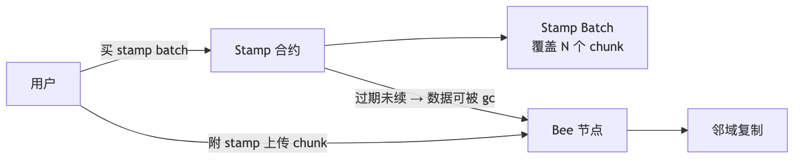
来源：https://docs.ethswarm.org/docs/concepts/incentives/postage-stamps/
来源：https://www.storj.io/pricing
来源：https://docs.ethstorage.io/
来源：https://greenfield.bnbchain.org/
来源：https://codex.storage/
| 平台 | 主网年份 | 经济模型 | 复制 / 容错 | 甜点应用 | EVM 友好? |
|---|---|---|---|---|---|
| IPFS + Pin | N/A（best-effort） | 中心化 SaaS | 视服务而定 | 通用 | ✅ |
| Filecoin | 2020 | deal-based + FIL+ | ≥ 5 副本 | 大数据归档 | ✅ FVM |
| Arweave | 2018 | 一次付费永久 | 全网激励冗余 | 永久内容 | ❌（间接） |
| Walrus | 2025-03 | 预付 epoch | 4-5× 纠删码 | 大型 NFT 媒体 | ❌（Sui） |
| 0G | 2025-09 | DA + 存储 + 计算 | 高吞吐 | AI workload | ✅ |
| Swarm | 2022 | postage stamp | 邻域复制 | EVM 项目内嵌 | ✅ |
| Storj DCS | 2020 | $/GB 月费 | 29/80 erasure | 企业 S3 替代 | N/A |
| EthStorage | 2024+ | EIP-4844 + L2 | rollup 安全 | 链上大数据 | ✅ 原生 |
| Greenfield | 2023-10 | BNB | 链上对象 | BSC 生态 | ✅ |
| Codex | testnet | 实验中 | sampling | zk dApp | ✅（计划） |
| Aleph.im | 2020 | 跨链 | 多副本 | dApp 后端 | ✅ |
Q1：Walrus 的 RedStuff 复制因子 4-5× 但容错可比 10× 全副本，怎么做到的？
Q2：你做了一个 AI Agent，需要存推理日志（小写入 + 高频）+ 模型权重（大文件 + 偶尔读）。怎么搭？
Q3：BNB Greenfield 把"对象"做成链上 first-class 资产，相比 S3 多了什么能力？
Q4：Storj 不上链为什么还能算"去中心化"？真的去中心吗？
理论讲完，下面把三个轴落到代码：上传 + 校验、ERC-721 把 CID 写进 baseURI、完整部署。所有代码对应 14-去中心化存储/code/ 下的可运行项目。
目标：到本节末，你应该能从空白 Node.js 项目开始，10 分钟内把一张图传上 IPFS / Arweave / Walrus 三家中的任何一家，并用任意公共网关读回来 + 校验未被篡改。这件事五年前需要懂 libp2p、跑本地 Kubo 节点、自己管 swarm key；今天靠 Pinata / Irys / Walrus CLI 三个 SDK 就能搞定。门槛降低是这个行业过去三年最大的工程成就之一。下面的代码全部可运行，对应
code/目录下的 mjs 脚本。重点不在炫技，在让你能立刻动手。
14-去中心化存储/code/ 目录下的完整可运行项目：
code/
├── package.json
├── .env.example
├── 01-helia-local-cid.mjs # 本地计算 CID 不联网
├── 02-pinata-upload.mjs # 上传到 Pinata
├── 03-lighthouse-upload.mjs # 上传到 Lighthouse（IPFS+Filecoin）
├── 04-irys-upload.mjs # 上传到 Arweave via Irys
├── 05-walrus-upload.sh # 上传到 Walrus（CLI 包装）
├── 06-cid-verify.mjs # 任意网关读取 + CID 校验
├── 07-multi-platform-redundancy.mjs # 多平台冗余上传
├── nft-dapp/ # 完整 ERC-721 + IPFS dApp
│ ├── contracts/MyNFT.sol
│ ├── script/Deploy.s.sol
│ └── frontend/
└── README.md
完整 Helia + Pinata 双路上传（核心代码见 code/02-pinata-upload.mjs）：
// 通用模式：本地先算 CID（与上传服务无关），上传后比对返回的 CID 验证
import { createHelia } from 'helia';
import { unixfs } from '@helia/unixfs';
import { PinataSDK } from 'pinata';
import fs from 'node:fs';
async function uploadToIPFS(filePath) {
// 1. 本地预先计算 CID（这一步纯密码学，不需联网）
const helia = await createHelia({ start: false });
const fs1 = unixfs(helia);
const bytes = fs.readFileSync(filePath);
const localCid = await fs1.addBytes(bytes);
console.log('本地计算的 CID:', localCid.toString());
// 2. 上传到 Pinata
const pinata = new PinataSDK({
pinataJwt: process.env.PINATA_JWT,
pinataGateway: 'gateway.pinata.cloud',
});
const file = new File([bytes], filePath.split('/').pop());
const upload = await pinata.upload.file(file);
console.log('Pinata 返回的 CID:', upload.cid);
// 3. 校验：两个 CID 必须一致（不一致说明出了 bug）
if (localCid.toString() !== upload.cid) {
throw new Error('CID 不匹配！可能 Pinata 用了不同的 chunking 策略');
}
return upload.cid;
}
CID 不匹配常见原因：不同实现的 chunking 策略和叶子节点编码可能不同（典型差异：raw leaves vs dag-pb leaves，256 KB vs 1 MB chunk size）。如果需要本地预算 CID 与 Pinata / Web3.Storage 返回的 CID 一致，必须显式对齐参数（如 unixfs(helia, { rawLeaves: true, chunker: 'fixed' })），并用相同 chunk size。这是上传 bug 排查的高频点。
// code/04-irys-upload.mjs（节选）
import Irys from '@irys/sdk';
async function uploadToArweave(data, contentType = 'application/json') {
const irys = new Irys({
url: 'https://node1.irys.xyz',
token: 'ethereum',
key: process.env.PRIVATE_KEY,
});
// 检查余额
const balance = await irys.getLoadedBalance();
console.log('当前余额（atomic）:', balance.toString());
// 估算上传成本
const size = Buffer.byteLength(data);
const price = await irys.getPrice(size);
console.log(`上传 ${size} 字节估算: ${irys.utils.fromAtomic(price)} ETH`);
if (balance.lt(price)) {
console.log('余额不足，自动充值...');
await irys.fund(price.minus(balance));
}
const tags = [
{ name: 'Content-Type', value: contentType },
{ name: 'App-Name', value: 'Web3-Engineer-Guide' },
{ name: 'App-Version', value: '1.0' },
];
const receipt = await irys.upload(data, { tags });
return {
txId: receipt.id,
permaUrl: `https://arweave.net/${receipt.id}`,
gatewayUrl: `https://gateway.irys.xyz/${receipt.id}`,
};
}
#!/bin/bash
# code/05-walrus-upload.sh
set -e
FILE=$1
EPOCHS=${2:-10}
# 前置：sui CLI + walrus client 已装，已有 SUI 和 WAL 余额
walrus store "$FILE" --epochs "$EPOCHS" | tee upload-receipt.txt
BLOB_ID=$(grep "Blob ID:" upload-receipt.txt | awk '{print $3}')
echo "Walrus Blob ID: $BLOB_ID"
echo "HTTP 网关 URL: https://aggregator.walrus-mainnet.walrus.space/v1/$BLOB_ID"
// code/06-cid-verify.mjs
import { CID } from 'multiformats/cid';
import { sha256 } from 'multiformats/hashes/sha2';
const GATEWAYS = [
'https://ipfs.io/ipfs/',
'https://dweb.link/ipfs/',
'https://gateway.pinata.cloud/ipfs/',
'https://4everland.io/ipfs/',
];
/**
* 从多个网关并行获取，第一个返回的就用；任何返回内容必校验 CID
*/
export async function fetchWithCidVerify(cidStr, timeoutMs = 10000) {
const cid = CID.parse(cidStr);
const promises = GATEWAYS.map(async (gw) => {
const res = await fetch(`${gw}${cidStr}`, {
signal: AbortSignal.timeout(timeoutMs),
});
if (!res.ok) throw new Error(`${gw} ${res.status}`);
const bytes = new Uint8Array(await res.arrayBuffer());
// 校验：实际内容的 hash 必须 == CID 中编码的 hash
const hash = await sha256.digest(bytes);
const expected = cid.multihash.digest;
if (!arraysEqual(hash.digest, expected)) {
throw new Error(`${gw} 返回内容与 CID 不匹配（可能被篡改）！`);
}
return { gateway: gw, bytes };
});
return Promise.any(promises); // 最快的胜出
}
function arraysEqual(a, b) {
if (a.length !== b.length) return false;
return a.every((v, i) => v === b[i]);
}
这是去中心化存储相对中心化 CDN 的本质优势：你不需要信任任何单一网关，因为字节级别的篡改会被 CID 不匹配立即发现。
场景：假设你要做一个 1 万张 PFP NFT 项目（类似 Bored Ape / CryptoPunks 风格）。每张图 200 KB，元数据 1 KB，需要永久 + 高频读 + 任何二级市场都能正确显示。链上写什么、链下存什么、合约 baseURI 怎么定？这是 NFT 工程的标准面试题，也是 OpenSea 上 50% NFT 项目踩过的坑——CryptoKitties 当年没用 IPFS、Bored Ape 用了 IPFS 但只 pin 在自己服务器、CrypToadz 倒是把所有内容上链（一只青蛙 50 KB SVG，一笔 mint 几十万 gas）。没有完美方案，只有务实折中。下面给一个 production-ready 模板。
一个最小可用的 NFT 项目：
tokenURI 指向 IPFScode/nft-dapp/contracts/MyNFT.sol）// SPDX-License-Identifier: MIT
pragma solidity 0.8.28;
import "@openzeppelin/contracts/token/ERC721/ERC721.sol";
import "@openzeppelin/contracts/access/Ownable.sol";
contract MyNFT is ERC721, Ownable {
/// IPFS base URI，形如 ipfs://bafy.../
/// Solidity 不支持 string immutable，所以用 private storage + 不暴露 setter
/// 来实现"事实上不可变"——这是真去中心化的关键
string private _baseTokenURI;
/// 构造时计算的 hash，外部可读取并校验链下数据完整性（替代 string immutable 的语义）
bytes32 public immutable BASE_URI_HASH;
uint256 private _nextTokenId;
uint256 public constant MAX_SUPPLY = 10000;
constructor(string memory baseURI_, address owner_)
ERC721("Web3 Engineer NFT", "W3ENG")
Ownable(owner_)
{
_baseTokenURI = baseURI_;
BASE_URI_HASH = keccak256(bytes(baseURI_));
}
function mint(address to) external onlyOwner returns (uint256) {
uint256 tokenId = _nextTokenId++;
require(tokenId < MAX_SUPPLY, "Max supply reached");
_safeMint(to, tokenId);
return tokenId;
}
function _baseURI() internal view override returns (string memory) {
return _baseTokenURI;
}
/// 完整 tokenURI 形如 ipfs://bafy.../1.json
function tokenURI(uint256 tokenId)
public
view
override
returns (string memory)
{
require(_ownerOf(tokenId) != address(0), "Nonexistent token");
return string(abi.encodePacked(_baseURI(), _toString(tokenId), ".json"));
}
function _toString(uint256 v) internal pure returns (string memory) {
if (v == 0) return "0";
uint256 temp = v;
uint256 digits;
while (temp != 0) { digits++; temp /= 10; }
bytes memory buffer = new bytes(digits);
while (v != 0) { digits--; buffer[digits] = bytes1(uint8(48 + v % 10)); v /= 10; }
return string(buffer);
}
}
每个 <id>.json：
{
"name": "Web3 Engineer NFT #1",
"description": "A learning NFT for the Web3 Engineer Guide",
"image": "ipfs://bafkrei.../1.png",
"attributes": [
{ "trait_type": "Module", "value": "14-decentralized-storage" },
{ "trait_type": "Rarity", "value": "Common" }
]
}
// 批量上传一个目录（含 N 个 png + N 个 json）到 IPFS，返回 base CID
import { PinataSDK } from 'pinata';
import lighthouse from '@lighthouse-web3/sdk';
import fs from 'node:fs/promises';
import path from 'node:path';
const META_DIR = './metadata';
const IMAGES_DIR = './images';
async function uploadDirectory() {
// 1. 上传图片目录到 Pinata
const pinata = new PinataSDK({ pinataJwt: process.env.PINATA_JWT });
const imageFiles = await fs.readdir(IMAGES_DIR);
const fileArray = await Promise.all(
imageFiles.map(async (n) => {
const buf = await fs.readFile(path.join(IMAGES_DIR, n));
return new File([buf], n);
}),
);
const imageUpload = await pinata.upload.fileArray(fileArray);
console.log('Image base CID:', imageUpload.cid);
// 2. 重写 metadata.json 把 image 字段改为 ipfs://<CID>/<n>.png
for (const f of imageFiles) {
const id = f.replace('.png', '');
const metaPath = path.join(META_DIR, `${id}.json`);
const meta = JSON.parse(await fs.readFile(metaPath, 'utf-8'));
meta.image = `ipfs://${imageUpload.cid}/${f}`;
await fs.writeFile(metaPath, JSON.stringify(meta, null, 2));
}
// 3. 上传 metadata 目录
const metaFiles = await fs.readdir(META_DIR);
const metaArray = await Promise.all(
metaFiles.map(async (n) => {
const buf = await fs.readFile(path.join(META_DIR, n));
return new File([buf], n);
}),
);
const metaUpload = await pinata.upload.fileArray(metaArray);
console.log('Metadata base CID:', metaUpload.cid);
// 4. 同步备份到 Lighthouse（Filecoin deal）
const lhKey = process.env.LIGHTHOUSE_API_KEY;
await lighthouse.uploadFolder(META_DIR, lhKey);
console.log('Lighthouse 备份完成');
return metaUpload.cid;
}
uploadDirectory().then((cid) => {
console.log(`合约 baseURI 设置为: ipfs://${cid}/`);
});
code/nft-dapp/script/Deploy.s.sol）// SPDX-License-Identifier: MIT
pragma solidity 0.8.28;
import "forge-std/Script.sol";
import {MyNFT} from "../contracts/MyNFT.sol";
contract Deploy is Script {
function run() external returns (MyNFT) {
// baseURI 是上传脚本输出的 CID
string memory baseURI = vm.envString("BASE_URI"); // ipfs://bafy.../
address owner = vm.envAddress("OWNER");
vm.startBroadcast();
MyNFT nft = new MyNFT(baseURI, owner);
vm.stopBroadcast();
console.log("Deployed at:", address(nft));
console.log("Base URI hash:", uint256(nft.BASE_URI_HASH()));
return nft;
}
}
| 决策点 | 推荐 | 反例 |
|---|---|---|
| baseURI 用 ipfs:// 还是 https:// | ✅ ipfs:// | https:// 网关一挂全空白 |
| baseURI 是否可改 | ✅ 不可改（immutable） | 可改的 baseURI 等于"NFT 不可变"承诺破产 |
| 元数据是否打 hash 上链 | ✅ 至少存 base CID hash 验证 | 不存 → 无法验证元数据完整性 |
| 是否多平台冗余 | ✅ Pinata + Lighthouse + 自建 IPFS 节点 | 单一 pinning → 关停就死 |
| 大图存哪里 | 视成本：Pinata for 中等；Walrus / Arweave for 永久 | 没规划 → 后期迁移痛苦 |
读到这里，你的主线（§1–§8）已经覆盖了一个 NFT 项目从"把字节命名"到"把 baseURI 焊在合约里"的完整闭环：三轴框架（§1）→ CID 寻址（§2）→ IPFS+Pinata（§3）→ Filecoin/Arweave/Walrus/0G 各自适用面（§4–§6）→ 选型决策树（§7）→ ERC-721 实战（§8）。主线到此为止——剩下的 §A–§G 是按需深挖的协议内幕（DHT/PoRep/SPoRA/RedStuff 数学、运营事故复盘、5 平台账单实测），不读不影响落地一个 NFT 项目。
14 → 15 衔接：本模块与模块 15（DAO 治理）的连接点是 §7 路径 B：DAO 投票档案 → Arweave 永久 + Filecoin 冗余 是技术选型；而治理提案、投票合约、参数升级如何用 DAO 形式管理存储协议自身，是模块 15 的核心议题。本模块与模块 13（NFT 身份与社交）的连接点是：§8 的 IPFS/Arweave + 不可变 baseURI 方案，直接解决了模块 13 留下的 tokenURI 落地问题。
下一步推荐：(a) 先跑完 code/ 目录里的可运行项目；(b) 再按需翻 §A–§G 任意一节做深挖；(c) 进入模块 15 学 DAO 治理。
以下为协议深挖、事故复盘、成本对比，按需阅读，不影响主线落地。
（完整复盘内容：主线第3章 §3.1 已提炼关键结论。本附录保留完整事故时间线和迁移 playbook。）
主线 §3.2 和 §7.4 已覆盖关键结论和三层冗余 playbook；本附录在此基础上补充完整事故分析。详细内容见主线 §3 和 §7 的对应节——原始深度复盘已整合进主线章节，无需重复。
决策助手：每次有人问"我应该用哪家存储"，正确答案是"取决于你的数据形态"。这一节把"1 GB 视频存 1 年"和"1 万 NFT 永久存"两个最常见场景的真实账单算给你看。看完后你会发现：没有一家能全面便宜——Lighthouse 一次付清永久但前期投入高、Filebase 单价最低但是 SaaS 单点、Walrus 团队声称便宜 100× 但锁在 Sui 生态。生产建议：永远不要选最便宜的那一家，选两到三家组合——cost 涨一倍，可靠性涨十倍。
| 平台 | 一次性费用 | 月费 | 1 年总成本 | 出口流量 | 备注 |
|---|---|---|---|---|---|
| Pinata | 0 | $20+ | ~$240 | 部分计入 | 免费层 1 GB 不够 |
| Filebase | 0 | 1 GB × $0.005 = $0.005 | $0.06 | $0.07/GB | 最便宜的 IPFS 单价 |
| Lighthouse 永久 | 约 $2.4（一次） | 0 | $2.4 | 内含 | 一次付清永久 |
| Web3.Storage / Storacha | 视套餐 | 企业版定价 | 视套餐 | 视套餐 | 已转企业模式 |
| 4everland | 0 | $5 套餐 100GB | $60 | 内含 | 中小项目划算 |
| Filecoin (Lighthouse SaaS) | < $1/年 估算 | - | < $1 | 通过 IPFS 网关 | 需配套 IPFS |
| Arweave (via Irys) | 1 次约 $4-8 | 0 | 永久 | 永久 | 永久存 |
| Walrus | 视 epoch | epoch 计费 | < $0.05 | 网关附带 | 团队声称比 FIL/AR 便宜 100× |
| Storj DCS | 0 | $4/TB→ $0.004/GB | $0.05 | $0.007/GB | S3 替代 |
| BNB Greenfield | gas + storage | 视 SP | 估算 < $1 | gas | BSC 生态 |
价格仅供 2026-04 参考，所有数字请以官方页面为准，链上经济极易随币价波动。
推荐组合：
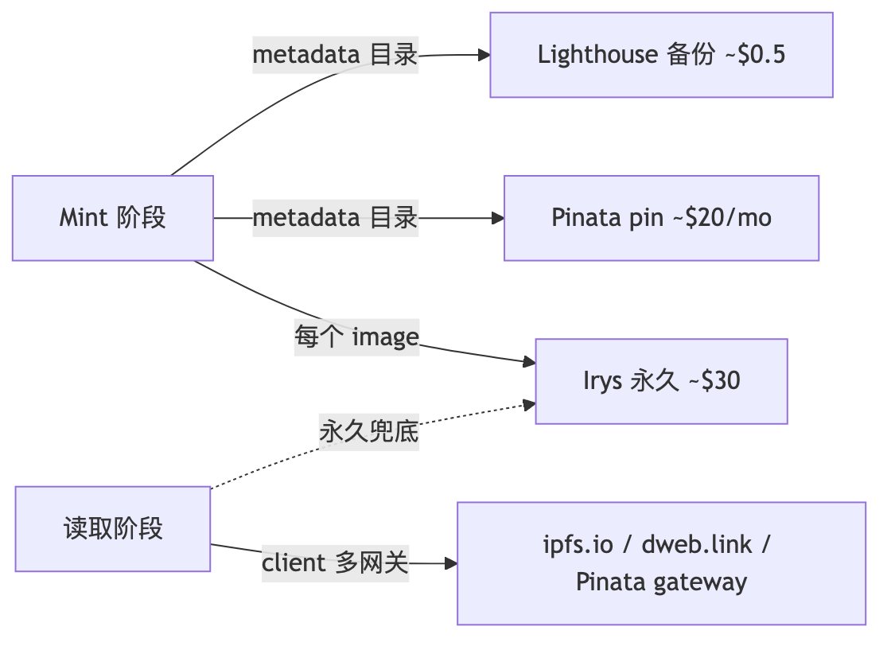
逻辑：图片体积大 → Arweave/Irys 一次性 ~$30 永久；元数据小 + 频繁更新链上 baseURI → IPFS pinning 即可；冗余备份避免 NFT.Storage 那种关停事故。
真实工程心得：见过太多团队把"该选哪家存储"这个决策搞得很复杂，跑表格、做 PoC、对比 SLA。其实最重要的两个问题就两个：(1) 数据要存多久？(2) 读取频率多高？ 答完这两个，决策树自动收敛。下面是按这两个轴画出的主图，加上一份"我亲眼见过"的反模式清单——前面六章每条教训都浓缩成一行红叉。
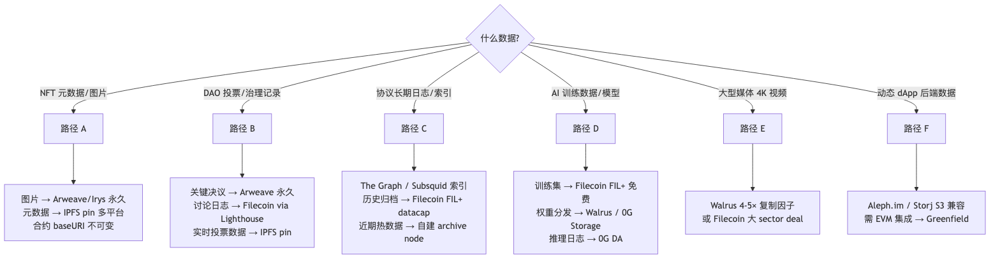
| 维度 | 问题 | 极端选项 |
|---|---|---|
| 持久性 | 1 年？10 年？永久？ | 月付 pin → Filecoin → Arweave |
| 读取 pattern | 一次写多次读 / 频繁更新 / 几乎不读 | 高频 → IPFS + CDN；低频归档 → Filecoin |
| EVM 原生需求 | 合约要直接读吗？ | 需要 → EthStorage / Greenfield；不需要 → 任何 |
❌ NFT 元数据用 https URL
❌ 单一 pinning 服务（NFT.Storage 关停教训）
❌ baseURI 用 mutable IPNS（用户难以验证）
❌ 把高频读小数据放 Filecoin（retrieval 慢）
❌ 用 Arweave 存"明天可能要删"的数据（删不掉）
❌ 没有备份 root CID 到链上 → 无法做完整性证明
每一个 SLA 都是用别人的事故堆出来的。这一节把过去五年最重要的四起去中心化存储事故按时间线复盘——NFT.Storage Classic 关停（2024-06）、Estuary 倒闭（2023-07）、AWS us-east-1 多次 region 故障（2021-2025）、DePIN 经济稳态质疑（持续中）。读这些不是为了八卦，而是要在自己的下一个项目里避开这些坑——它们都不是孤例，而是结构性失败模式，下一次还会发生在新的玩家身上。
完整复盘见 §6.3。这两起合并是行业最具教育意义的"以为去中心化、实际单点 SaaS"失败模式。结论留在这一节：任何免费层的 SaaS 都不能作为唯一持久性来源——免费即不可问责，关停只需公告 90 天。
背景：Estuary 是 Web3.Storage 的开源替代，做 IPFS + Filecoin 自动 deal。
事件：2023-07 公告停止运营，2024-04 网站下线。用户必须自行迁出数据，Filecoin deals 仍按合约条款执行直到到期，但元数据 / 索引服务不再维护。
影响：依赖 Estuary 的项目要么自建相同栈，要么迁到 Web3.Storage / Lighthouse。
教训：开源不等于可持续——背后还是要有收入或捐赠基金养。
背景：AWS us-east-1 是全球最大 region，Web3 大量 indexer / RPC / 前端跑在上面。
事件：2021-12-07、2023-06-13、2025-10-20 等多次 region 级故障，OpenSea / Coinbase / 多个 dApp 前端不可用数小时。
影响：用户对"去中心化协议为什么因为 AWS 挂了就用不了"产生根本质疑，推动了真去中心化前端（IPFS hosting + ENS）的采用。
教训：智能合约去中心 ≠ dApp 去中心。前端、RPC、indexer 任何一层中心化都会成为瓶颈。
来源：AWS post-mortem 公告（2021-12 / 2023-06 / 2025-10）
部分 DePIN / 去中心化存储项目早期靠代币激励快速扩节点，后期代币奖励减半 / 价格下跌时节点流失。不是单点事故，是行业反复出现的模式。教训：评估时关注经济稳态而非启动期数据。问"节点 5 年后还有动力跑吗？"
如果这一节你只能记住一句话，就是："3-2-1 备份原则"在去中心化时代依然有效——3 份数据、2 种介质、1 份异地。 翻译到本模块的语言：3 家 pinning + Filecoin 长期 + Arweave 永久。第二条铁律：链上必须有 root CID 的 hash registry。再去中心化的存储，没有链上自证机制，关停一家你就只能祈祷。
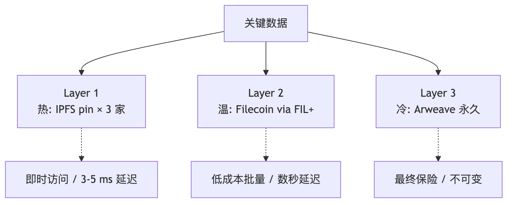
规则： - 3 家 pinning：Pinata + Filebase + 4everland 任意组合（不同公司、不同基础设施） - Filecoin via Lighthouse 拿 FIL+ datacap，5 副本起 - Arweave 备份关键 CID 列表（即使图片不上 Arweave，至少 metadata + 索引上）
// code/health-check.mjs
import { fetchWithCidVerify } from './06-cid-verify.mjs';
const CRITICAL_CIDS = [
'bafybeig.../nft-base',
'bafybeih.../dao-archive',
];
async function dailyHealth() {
const results = [];
for (const cid of CRITICAL_CIDS) {
try {
const start = Date.now();
await fetchWithCidVerify(cid, 30000);
results.push({ cid, ok: true, latencyMs: Date.now() - start });
} catch (e) {
results.push({ cid, ok: false, error: e.message });
}
}
// 任何失败 → 立刻发告警（PagerDuty / Slack / Tg）
const failed = results.filter((r) => !r.ok);
if (failed.length) await notify(failed);
}
把"哪个 CID 是项目方官方"写进合约：
contract DataRegistry {
mapping(string => bytes32) public officialCidHash;
event OfficialDataPublished(string label, string cid, bytes32 cidHash);
function publish(string calldata label, string calldata cid) external onlyOwner {
bytes32 h = keccak256(bytes(cid));
officialCidHash[label] = h;
emit OfficialDataPublished(label, cid, h);
}
}
任何用户拉到数据后可以：1) 算 CID → 2) 比对 officialCidHash[label] → 3) 自证"这是项目方真实数据"。
如果某天 Pinata / Lighthouse / 其他平台关停：
关键：只要至少有一家 pinning 还在 hosting，CID 就还有效。这就是内容寻址的力量——迁移过程中数据从未真的"丢失"。
Q1：你被任命设计某 NFT 项目的存储方案，PFP 系列 10000 个，每个图 200 KB。预算 $100。给出完整方案与成本估算。
Q2：解释为什么"删除 NFT 元数据"在内容寻址下几乎不可能，而在中心化存储下很容易。
Q3：给定一个 DAO 投票合约，每月一次投票，希望"任何人 50 年后能验证投票结果未被改"。设计存储方案。
mapping(uint256 => bytes32) public voteSnapshotHash;
event VoteFinalized(uint256 indexed proposalId, string arweaveTxId, bytes32 contentHash);
Q4：你的 dApp 前端选 ENS contenthash + IPFS 部署。每次 CI 构建产出新 CID。怎么设计部署流水线？
1. Build：next.js / vite build → out/
2. CAR 化：把 out/ 打成 CAR 文件，得到 root CID
3. 多平台 pin：并行上传到 Pinata + Filebase + 4everland
4. 校验：从每个网关 fetch root → CID 比对一致
5. 更新 ENS：调用 PublicResolver.setContenthash(node, encoded_cid)
6. 监控：1 小时内多次跨网关 health check
7. 回滚：保留前 N 个 CID 列表，必要时一键回滚 ENS contenthash
Q5：你的项目同时用 IPFS（NFT 元数据）+ Arweave（重要文档）+ Walrus（视频）。某天 IPFS pinning 服务全部出问题（极端假设）。你能恢复吗？
Q6：解释为什么 Walrus 用 RedStuff 4-5× 复制因子能保证容错，比 Filecoin 10× 全副本更高效？
Q7：什么场景下你不应该用去中心化存储而该用中心化 S3？
Q8：给一个简单架构图：把 IPFS / Filecoin / Arweave 三者画成"互补关系"而非"竞争关系"。
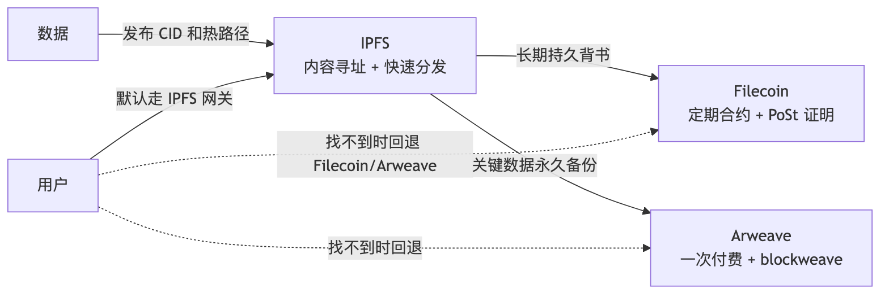
协议规范 / 白皮书： - IPFS 论文 https://github.com/ipfs/papers - Filecoin 白皮书 https://filecoin.io/filecoin.pdf - Arweave 黄皮书 https://www.arweave.org/files/arweave-yellow-paper.pdf - Walrus 论文 https://arxiv.org/abs/2505.05370 - AR.IO 白皮书 https://whitepaper.ar.io/
官方文档： - IPFS Docs https://docs.ipfs.tech/ - Filecoin Docs https://docs.filecoin.io/ - Helia https://github.com/ipfs/helia - Irys https://docs.irys.xyz/ - Walrus https://docs.walrus.site/ - 0G https://docs.0g.ai/ - Swarm https://docs.ethswarm.org/
SaaS API 文档： - Pinata https://docs.pinata.cloud/ - Lighthouse https://docs.lighthouse.storage/ - Filebase https://docs.filebase.com/ - 4everland https://docs.4everland.org/
进阶主题： - Multiformats 完整规范 https://multiformats.io/ - libp2p 文档 https://docs.libp2p.io/ - IPLD 数据模型 https://ipld.io/
事故归档： - NFT.Storage 转型公告 https://nft.storage/blog/nft-storage-operation-transitions-in-2025 - AWS us-east-1 history https://aws.amazon.com/premiumsupport/technology/pes/
14 → 15 衔接已上移至主线 §8 末尾的"主线小结：你已经会的 + 下一站"。这里仅留版本印记。
验证日期：2026-04-28。工具链版本：Helia 4.x / Pinata SDK 2.x / Irys SDK 0.2.x / Solidity 0.8.28 / Foundry stable。